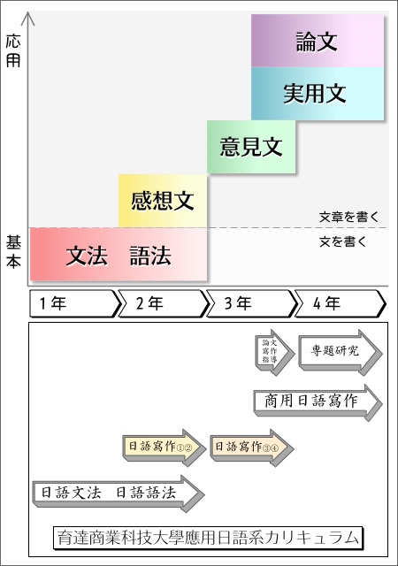
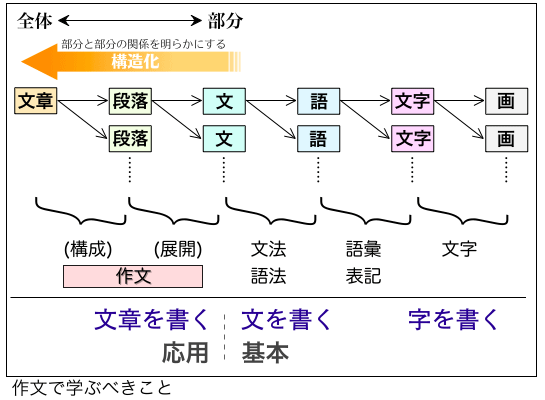

日本語作文
育達商業科技大學應用日語系では、《聞く・話す・読む・書く・訳す》を言語運用の５技能と位置づけ、そのすべてにおいて高い応用力を持つことを学習目標と定めている。
《書く》を学ぶコースは、下図のように体系化されている。下図の通り、〈日本語作文〉 (中文 : 日語寫作) の授業では、感想文と意見文について学んでいく。

『作文』で学ぶべきこと
作文の授業では、《文章を書くこと》を学んでいく。具体的には、文章の構造化（＝部分と部分の関係を明らかにすること）の方法や手法について学ぶ。
